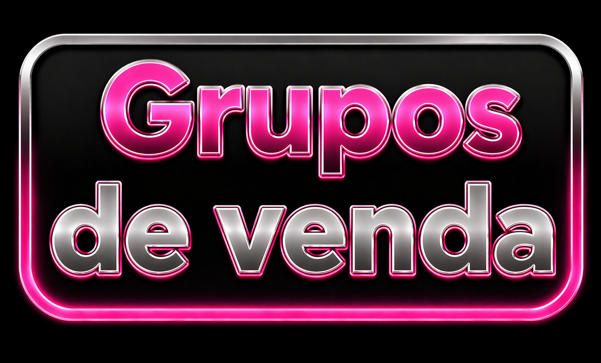
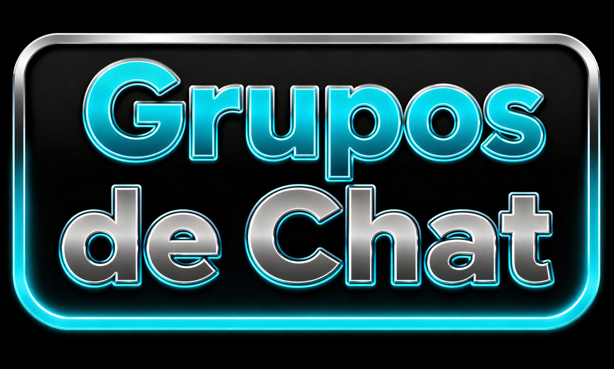

Grupos - Categoria




Navegue por categorias organizadas de grupos do Telegram e encontre conteúdos de forma rápida e prática.
A estrutura foi pensada para facilitar o acesso, mantendo uma navegação simples, limpa e eficiente.
Explore diferentes opções e descubra novos grupos de acordo com seu interesse.